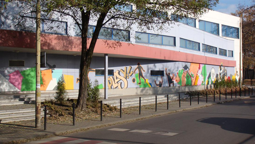
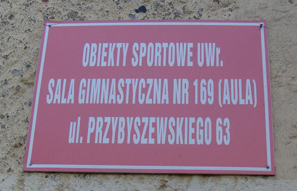

WHAT'S NEW OVERVIEW F.A.Q. FORUM MEMBERS REFERENCE CLUBS EVENTS RESULTS PHOTOS VIDEOS FREESTYLE NET GAME IFPA GROUPS RULES LINKS
*Copyright © 2026, International Footbag Players' Association
A 501(c)(3) Non-Profit Corporation
Zocha Jam 2009
Online registration CLOSED
December 5-6, 2009
Location:
Sports Gym ul. Przesmyckiego 10
Wroclaw, Poland
Wroclaw, Poland
Host Club:
Events Offered:
Open Singles Net, Open Doubles Net, Intermediate Freestyle, Women Freestyle, Open Freestyle, Doubles Freestyle, Shred30, Sick3, Circle Contest, Request Contest, 2 Square, Golf
Results for Zocha Jam (2009)
Open Singles Routines:
1. Arkadiusz Dudzinski (Poland)2. Damian Gielnicki (Poland)
3. Marcin Bujko (Poland)
4. Michal Biarda (Poland)
5. Jakub Grabarczyk (Poland)
6. Mateusz Janicki (Poland)
7. Bartek Bubula (Poland)
8. Tomasz Ostrowski (Poland)
9. Maciej Bujko (Poland)
9. Mariusz Wilk (Poland)
9. Ales Zelinka (Czech Republic)
9. Patrik Cerny (Czech Republic)
13. Wiktor Debski (Poland)
13. Maciek Niczyporuk (Poland)
13. Kamil Wysocki (Poland)
13. Jind Smola (Czech republic)
13. Jindra Smola (Czech Republic)
13. Jindra Smola (Czech Republic)
17. Rafal Kaleta (Poland)
17. Michal Ostrowski (Poland)
17. Pawel Nowak (Poland)
17. Arkadiusz Stanek (Poland)
Women's Singles Routines:
1. Sylwia Kocyk (Poland)2. Karolina Modrzejewska (Poland)
3. Gosia Debska (Poland)
Open Shred:30:
1. Arkadiusz Dudzinski (Poland)2. Jakub Grabarczyk (Poland)
3. Marcin Bujko (Poland)
4. Damian Gielnicki (Poland)
5. Mariusz Wilk (Poland)
6. Mateusz Janicki (Poland)
7. Pawel Nowak (Poland)
8. Maciek Niczyporuk (Poland)
Open Sick 3-Trick:
1. Damian Gielnicki (Poland)2. Mateusz Janicki (Poland)
3. Arkadiusz Dudzinski (Poland)
Open Circle Contest:
1. Arkadiusz Dudzinski (Poland)2. Damian Gielnicki (Poland)
3. Marcin Bujko (Poland)
4. Maciej Bujko (Poland)
Open 2-Square:
1. Wiktor Debski (Poland)2. Michal Biarda (Poland)
3. Arkadiusz Dudzinski (Poland)
Manually Entered Results
Doubles Net: 1. Petr Stejskal/Pavel Hejra 2. Piotr Ba³trukiewicz/Wiktor Dêbski 3. Wojciech Jamski/Rafa³ Andryka Singles Net: 1. Piotr Ba³trukiewicz 2. Pavel Hejra 3. Wojciech Jamski 4. Mariusz Wilk 5. Rafa³ Andryka 5. Petr Stejskal Women Freestyle: 1. Sylwia Kocyk 2. Karolina Modrzejewska 3. Gosia Nycz Open Freestyle: 1. Arkadiusz Dudziñski 2. Damian Gielnicki 3. Marcin Bujko 4. Micha³ Biarda 5. Jakub Grabarczyk 6. Mateusz Janicki 7. Bartosz Bubula 8. Tomasz Ostrowski 9. Ales Zelinka 9. Mariusz Wilk 9. Patrik Cerny 9. Maciej Bujko 10. Maciej Niczyporuk 10. Jindra Smola 10. Kamil Wysocki 10. Wiktor Dêbski 11. Arkadiusz Stanek 11. Pawe³ Nowak 11. Micha³ Ostrowski 11. Rafa³ Kaleta Shred30: 1. Arkadiusz Dudziñski - 240 pkt 2. Jakub Grabarczyk - 195 pkt 3. Marcin Bujko - 183 pkt 4. Damian Gielnicki - 180 pkt 5. Mariusz Wilk - 160 pkt 6. Mateusz Janicki - 158 pkt 7. Pawe³ Nowak - 118 pkt 8. Maciej Niczyporuk - 113 pkt Sick3: 1. Damian Gielnicki (Sumo > Atomic Drifter > Bedwetter) 2. Mateusz Janicki (Sunilwalker > Spikehammer > Pixie Symp. Whirl) 3. Arkadiusz Dudziñski (Sumo > Atomic Whirl > PS Eggbeater) Request Contest: 1. Damian Gielnicki 2. Arkadiusz Dudziñski 3. Wiktor Dêbski Circle Contest: 1. Arkadiusz Dudziñski 2. Damian Gielnicki 3. Marcin Bujko 4. Maciej Bujko Doubles Freestyle: 1. Jakub Grabarczyk/Damian Gielnicki 2. Gosia Nycz/Wiktor Dêbski 3. Arkadiusz Dudziñski/Mateusz Janicki 2 Square: 1. Wiktor Dêbski 2. Micha³ Biarda 3. Arkadiusz Dudziñski Footbag Golf: 1. Kamil Wysocki 2. Micha³ Ostrowski 3. Marek Wierzbicki
Another year has passed, and it's time to announce the 8th annual Zocha
Jam tournament! Being the biggest international Polish event, this year's
tournament will once more gather the best European players to get them to
compete for top spots on the podium. Don't miss the crazy spike and shred
action and visit Wroc³aw for a fun weekend with lots of footbag!
Event Details:
VENUE:
Sports Gym ul. Przesmyckiego 10, Wroc³aw It is a modern gym, where both Freestyle and Net will be held. It has an built-in sound system and locker rooms with showers. How to get there? Take the bus "A" from Dworcowa (street next to the main train station) and ride it to the Dani³owskiego Street. Then you will have to walk a short distance (check the map below). You can also take the 116 bus from Plac Grunwaldzki, and get out on the same stop (Dani³owskiego). Map:
Poka¿ Zocha Jam 2009 na wiêkszej mapie MORE PHOTOS:  Stret View  Sign next to the entrance REGISTRATION FEES: Open Category: 50 PLN Women: 30 PLN Intermediate: 30 PLN Guest: 20 PLN Pre-payment is required, late registration will be offered for the base price increased by 20 PLN. INFO FOR PLAYERS: Players competing in Routine events are required to send their music to the organizers before the the tournament. Please send your e-mails to zochajam@o2.pl - files need to have their names in the following format: first name_last name_event_round (for example jan_kowalski_openfreestyle_final) TIMETABLE: Saturday 5.12 10:00 Late Registration and Judges Workshop 10:00 Open Doubles Net Qualifications 11:00 Open Freestyle Routines Qualifications 13:00 Shred 30 13:30 Circle Contest Qualifications and Finals 15:00 Sick3 15:30 Associations Meeting 17:00 Open Doubles Net Final Sunday 6.12 09:00 Footbag Golf 10:00 Open Singles Net Qualifications 11:00 2 Square 13:00 Request Contest 14:00 Routines Finals: Intermediate, Women, Doubles, Open 16:00 Singles Net Final 17:00 Award Ceremony
Created Monday, October 19th, 2009, 05:56am (PDT); last update Tuesday, December 8th, 2009, 09:50am (PST).